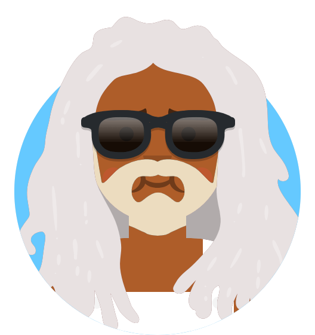

<!DOCTYPE html>
<html lang="en">
  <head>
    <meta charset="UTF-8" />
    <title>Contact | Interactions</title>
    <link rel="stylesheet" href="style.css" />
  </head>
  <body>
    <aside class="contacts">
      <h2>My contacts</h2>
      <ul id="contact-2">
        <!----HW1------
          <section> este folosit pentru a organiza conținutul principal al unei pagini cum ar fi o introducere. 
          <aside> se potriveste cu un continut suplimentar la cel principal al paginii. Dupa cum am inteles se foloseste mai des la elemente cu reclame, anunturi, linkuri...
          -->

        <!----HW2--------
                (am folosit acest element din motiv ca se potriveste perfect dupa semantica am adaugat figcaption pu o legenda ce ajuta motoarele de cautare sa inteleaga imaginea mai bine)
            <figure> 
                
                <figcaption>Avatar of John Doe</figcaption>
            </figure>
            -->
        <li id="contact-1">
          <span class="menu">
            <a href="#contact-2" class="activate">⦙</a>
          </span>

          <span class="report">
            <div>
              <a href="#">block</a>
              <a href="#">report</a>
            </div>
          </span>

          <figure class="avatar">
            
            <span class="status on"></span>
          </figure>

          <span class="info">
            <span>John Doe</span>
            <span>Hi, how are you?</span>
          </span>

          <span class="action">
            <a href="#contact-1" class="add">+</a>
          </span>

          <span class="add-details">
            <div>
              <a href="#">friend</a>
              <a href="#">follow</a>
            </div>
          </span>
        </li>
      </ul>
    </aside>
  </body>
</html>
